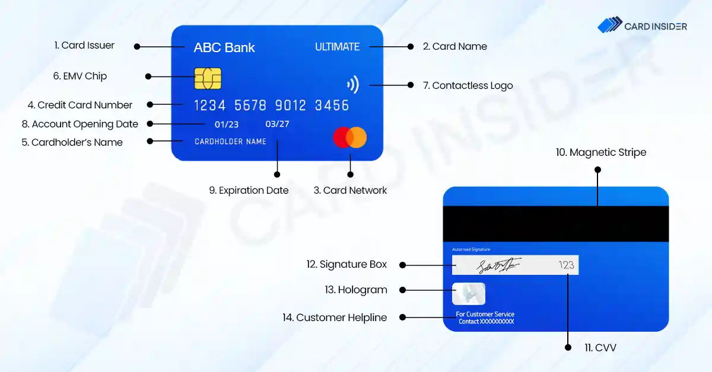
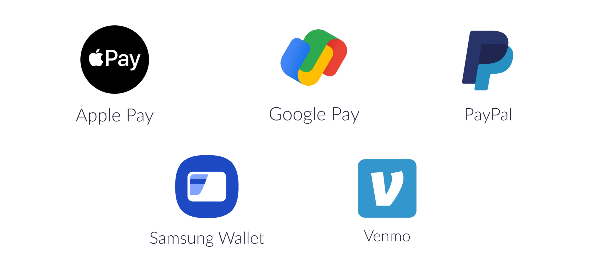
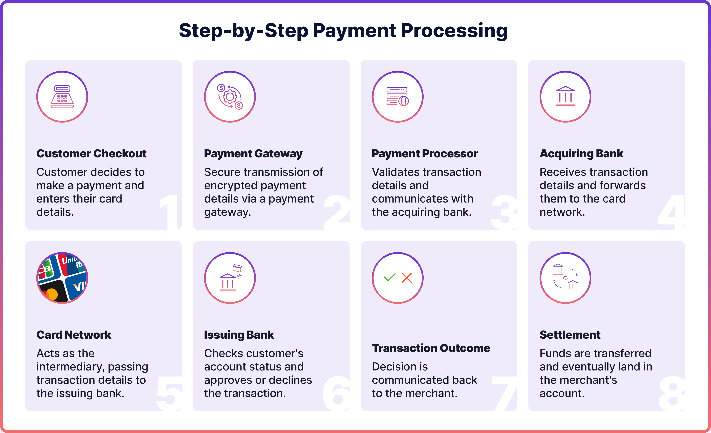

Online transaction is a method of payment made online through the internet. This transaction utilizes digital technology to transfer funds from one to another without need physical meeting. The process can be done through devices such as smartphones, computers or tablets and often uses a payment gateway to securely process the transaction
Example bank card

Debit and credit cards are commonly used for online payments and purchases. A debit card uses the money already available in your bank account and credit card allows you to make payments using borrowed money that you can repay later. When making an online transaction, you must enter your card number, expiry dateand CVV ( 3 digit security code(“454”)). To complete the payment safely bank send a One Time Password (OTP) to your mobile number for verification. This security step ensures that only the card owner can approve the payment. Debit and credit cards are widely accepted, easy to useand provide a fast and secure way to pay for online shopping, billsand subscriptions.
Online Banking.. also know as NetBanking, allows users to access and manage their bank accounts through a secure website or mobile application. With NetBanking, you can check your account balance, transfer money to others, pay bills, download bank account statementsand manage fixed deposits without visiting a bank branch. Transactions are protected using login passwords, OTP verification and security questions for safe access. NetBanking makes financial activities faster, more convenientand helping users to handle their money confidently from anywhere.

Mobile Wallets are digital applications that allow you to store money electronically and make quick payments using your smartphone. Popular wallets like Google Pay, Paytmand PhonePe let users pay bills, recharge mobile phones and make in store payments using QR codes. They provide a fast and convenient way to manage daily transactions without needing physical cash or cards. Mobile Wallets also offer features like transaction history, cashback rewardsand instant transfers for making them user friendly. Security measures such as PINs, biometric locks and OTP verification help ensure safe and secure payments.
UPI is a easy and fast digital payment method that allows you to send and receive money directly from your bank account using your mobile phone. without typing bank details. You only need a simple UPI ID like (name@user) or phone number. UPI works through apps such as Google Pay, PhonePeand, Paytm lets you pay instantly by entering your UPI PIN. You can use UPI to pay shop bills, send money to person, scan QR codes or make online purchases without carrying cash or cards. All transactions are protected with bank level security and the money is transferred within seconds. Making UPI one of the safest and most convenient payment methods today.
Online transactions are used to pay monthly bills for mobile phone services, internet, electricity, water and subscriptions paying (e.g:Netfilx) This is perhaps the most common use to purchase goods and services from online retailers (e.g: Amazon, Ebay) using credit/debit cards, wallets or bank transfers. Digital wallets and payment apps like PayPal, Google Pay, Apple Pay enable users to instantly send or receive money from friends and family. Online ticket booking let users compare options, choose seatsand get instant digital tickets without waiting in line. This system manage on website or app. Online fee payment for schools and colleges allows students or parents to pay electronically from anywhere at any time.

Online transactions provide convenient and efficient alternative to traditional payment methods. They enable users to complete activities from purchasing goods and services to paying bills and booking tickets instantly from any location at any time using devices like smartphones or computers. Online transactions offer several core advantages like fast and convenient, allowing users to make payments anytime, anywhere and no need to carry physical cash. Transaction leverage secure and encrypted systems to protect financial information and also providing a clear digital record of all financial activity.
1.Check the URL: Verify the website address. A legitable payment page will start with "htps" and have a lock icon.Fake pages often contain spelling mistakes, unusual symbols or different URL.
2.Look for poor quality signs: Watch for low quality graphics, bad logos or spelling and grammar errors.
3.Never provide personal details: like your ATM PIN, full password or other sensitive information that real banks would never ask for.
4.Confirm OTP requests: A legitimate transaction requires a One Time Password (OTP) for verification. If the page not ask for an OTP, it is likely unsafe.
5.Beware of redirection and phishing: Be cautious if you are redirected to an unfamiliar website during the payment process. This is a common tactic used by scammers.
6.Avoid unbelievable offers: Unrealistic discounts or offers are a common trap used by scammers to trick users into providing their details.
7.Double check everything: Always take the time to carefully review all details before completing an online payment.
Online payments can sometimes fail because of simple mistakes or technical issues. Many users enter the wrong card number, CVV, expiry date or UPI PIN which causes the transaction to stop. Sometimes the OTP arrives late or is typed incorrectly. Payments may also fail if there not enough balance in the account or the internet connection is weak or the bank server is temporarily down. These are common problems that can be easily fixed by checking details, retrying the transaction or waiting for stable internet and bank services.